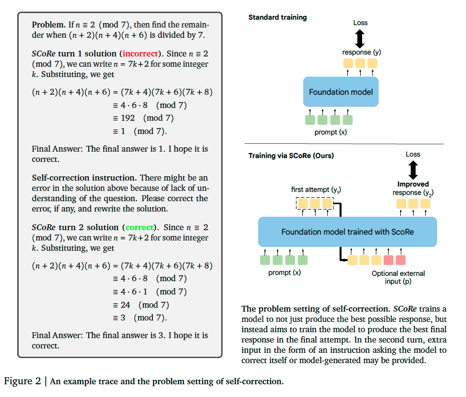
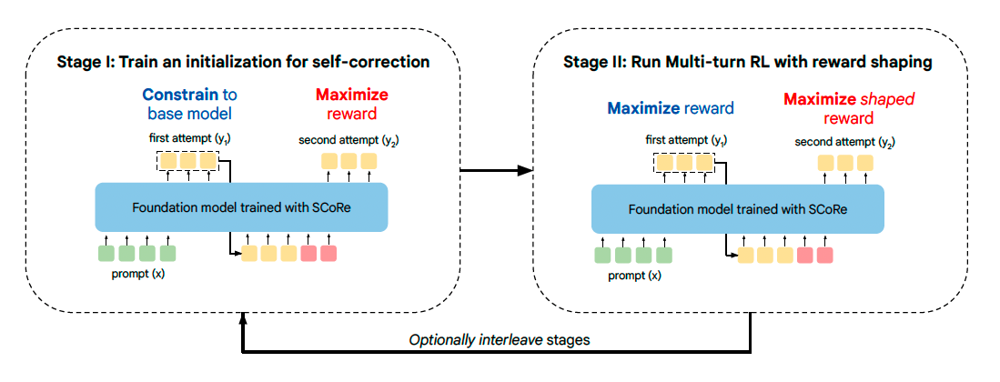

Training Language Models to Self-Correct via Reinforcement Learning#
Note
Training self-correction via SFT either suffers from a distribution
mismatch between the training data and the model’s own responses (Pair-SFT), or implicitly prefers only making minor edits (STaR).
SCoRe is a multi-turn reinforcement learning approach, that directly train on self-generated data, it has two stages:
stage 1: produce high-reward revisions at the second attempt, while forcing the model to not change its first-attempt response.
stage 2: trains responses at both attempts towards optimizing reward, and reward shaping to incentivize self-correction.
Preliminaries and Problem Setup#
Our goal is to develop an approach for training LLMs to improve their own predictions by entirely training on self-generated data.
Concretely, given a dataset \(\mathcal{D} = \{(x_{i}, y_{i}^{\ast})_{i=1}^{N}\}\) of problems \(x_{i}\) and oracle responses \(y_{i}^{\ast}\), we will train an LLM policy \(\pi_{\theta}(\cdot|[x,\hat{y}_{1:l},p_{1:l}])\) that, given the problem \(x\), previous \(l\) model attempts \(\hat{y}_{1:l}\) at the problem, and auxiliary instructions \(p_{1:l}\) (e.g., instruction to find a mistake and improve the response), solves the problem \(x\) as correctly as possible.
Moreover, we assume access to a reward function / verifier \(\hat{r}(y, y^{\ast})\), such as a string-matching based answer checking function that evaluates correctness of response \(y\) by comparing with the oracle response \(y^{\ast}\). Critically, we do not assume access to such a function at test-time and the model itself learns to deduce whether there was a mistake and corrects it.

We aim to find a model \(\pi\) that maximizes the correctness reward obtained from the verifier at the end of \(l+1\) turns:
SCoRe: Self-Correction via Multi-Turn Reinforcement Learning#
Stage I: Training a Model Initialization to Prevent Collapse#
We explicitly fine-tune the base model to produce high-reward revisions at the second attempt, while forcing the model to not change its first-attempt response. This stage is critical in reducing the base model’s bias towards simply coupling the first and second-attempt distributions, and thus becoming trapped in a local optima when actual multi-turn RL is run.

Stage II: Multi-Turn RL with Reward Shaping#
Equipped with a model initialization from Stage I that exhibits a substantially smaller bias to couple the two responses, the second stage of SCoRe now trains responses at both attempts towards optimizing reward (\(x_2\) denotes all the tokens from the first turn concatenated with each other):
Reward shaping to incentivize self-correction. It is unclear if running RL for optimizing the above Equation prefers a strategy that incentivizes self-correction over finding the best first-attempt response and keeping it unchanged, to mitigate this issue, given an two-turn on-policy rollout \(\tau = \{x_1, \hat{y}_1, \hat{r}(y_1, y^{\ast}), x_2, \hat{y}_{2}, \hat{r}(y_2, y^{\ast})\}\), we propose to modify the reward \(\hat{r}(y_2, y^{\ast})\) with an additional bonus given by:
Adding this bonus to the second attempt only emphasizes traces that flip the correctness of the response and assigns a heavy negative penalty to transitions that change a correct response to incorrect in the second attempt.
Tip
SCoRe applies stages I and II in an interleaved fashion for multiple iterations.